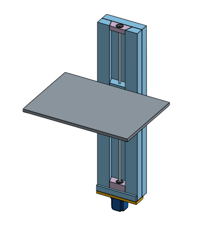
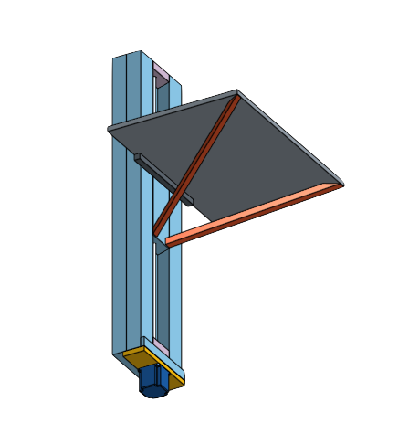

Class Projects
Yo-Yo Manufacturing [2.008]
The final project for Design and Manufacturing II is to design and manufacture 50 yo-yos. My team and I designed a yo-yo inspired by a camera. We utilized multiple manufacturing methods include CNC milling and lathe work, thermoforming, injection molding and further explored other methods in class.

The picture above shows the exploded view of the final yoyo we built. It was a multipart yoyo and was the fastest yoyo (rotational speed) in the history of the class.
The molds we used in injection molding are shown in the picture above.

Reflection:
I learned to design with manufacturing in mind. I also gained multple skills through this experience inluding CNC programming and group CAD integration. I learned and furthered my skills with several machinery including the lathes, mills, thermoforming and injection molding machines.
Emergency Power Pack [2.013]
The Engineering Systems Design class is an opportunity for students to create real systems as specified by sponsors. My team continued previous work of creating a portable power system for marines. We were able to design and test solutions to the current system and a working prototype will hopefully be created by the end of spring of 2017.

The picture above shows a prototype of the emergency powerpack (EPP). Our team improved upon the design with a smaller unit and a new regulatory system. We also greatly improved the working pressure of the system.
Reflection:
This class is one of the most useful classes I've taken in MIT, exposing me to real world engineering issues and presenting our ideas to field experts. Rapid prototyping and experimenting are important aspects of systems design. This class revealed the importance of defining parameters. This class helped me to develop my intuition as an engineer as well as communication skills with teammates and sponsors.
Paper Weight [2.008]
This was the first project in 2.008, Design and Manufacturing II. We were tasked with creating simple paperweights from aluminum blanks. The main goal of the class was the motivate designing with manufacturing in mind. I designed the paperweight in Solidworks, and used MasterCAM to generate the necessary G-code for the CNC mills and lathes.
The stock was first machined into the proper cylindrical shape on a lathe. I used a simple roughing pass to face the part, a groove part to add the features and a finish pass. The work on the mill followed similarly: a simple facing, a grooving and a finish pass.
Reflection:
CNC machining has become great tool in my repertoire. It eases and enables the machining of complex structures. I've moved past MasterCAM and learned to use the CAM features in Autodesk due to easier access.
Precision Product Design [2.70]
The webpage outlines my ongoing work in my precision design class. We've explored several phases of the design and manufacturing process including, design strategies, error apportionment, and combination of different machine elements. The final project for the class is the design, fabrication and "closing the loop" of a desk capable of transforming into a standing desk.
Robotics [2.12]
We were tasked with designing an arm for a robot and the software necessary to complete a course inspired by Pokemon-Go. I worked with the mechanical team, particularly with the manipulator, in designing and fabricating the physical parts of the robot.
Reflection:
I was introduced to the ROS system and its many benefits in this class. It was a chance for me to incorporate many of the physics, mechanics and dynamics in the physical and software components of robots. I learned the importance of allocating problems between mechanical and software components and several design principles important to robotics.
Extracurricular Projects
Next Big Thing (NBT)
In my freshman year at MIT, a new student group was initiated in my dorm. They built a rope swing in the courtyard. The group was named Next Big Thing and subsequent projects were much larger. I joined the group and worked on all the subsequent projects: a slide (slipper), a zip-line (zipper) and a larger swing (flipper). In the final semester of my junior year, I had the honor to design and lead the construction of a 16 ft. see-saw (tipper).

Reflection:
I learnt a lot from leading Big Tipper with my co-leaders; I spent quite a lot of time CADing and leading construction. Time management was crucial to the completion of the projects. My woodworking and project planning skills were greatly improved. I learned to manage larger-scale projects as well as interect with city officials.
Electric Skateboard
I decided to make an electric skateboard as a birthday present for my younger brother. With a bit of research and analysis, I decided upon a mechanical design that met the full requirements of the system. The power electronics was also very simple.
The mount shown above was welded to the trucks. It was machined from an aluminum plate. It's function is to hold the motor and the only forces it experiences are due to the tension on the timing belt. An idler was added to maintain belt tension. I seek to add a night-light and an integrated battery monitor.

Reflection:
This project was a great way for me to put my skills into practice. It was a simple machining and electronics project.
Desk Lamp
Inspired by the HENG Balance lamps, I intend to create a simple lamp that seems to defy gravity. Utilizing magnets and mechanical switches, I will be completing final desings for the desk lamp. I hope to finish this project by the end of February.
Future Projects
Sonic Screwdriver
The creation of a multifunctional scientific instruments. This project has been on an extended hiatus.
Automaton
Automatons are amazing! I hope to build one similir to 'The Writer' aoutomaton some day.
Board Printer
This is a simple CNC plotter that will use a marker to draw traces for home pcb design. The printer can also be used to print images on paper, books, and other forms of media.